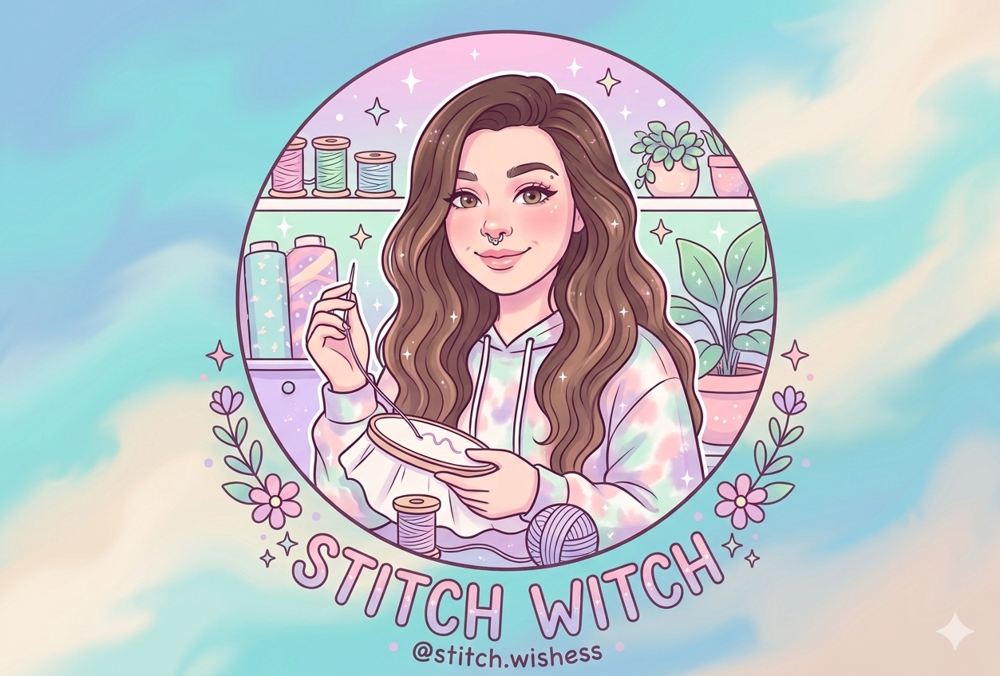

The maker
Hi, I'm Abi

“To many, Stitch is a mischievous blue alien. To me, he represents something much deeper.”
My collection is a tribute to my mom, and a way to keep precious memories alive. Every piece I find or create is a celebration of the connections that shape us, and the loved ones who stay in our hearts forever.
Stitch Wishess started small — a handful of hand-beaded pens made at a kitchen table. It has grown to include painted canvases, keychains, car accessories and night lights, but the process hasn't changed. Every item is still handmade or made to order, one wish at a time.
Abi — founder, Stitch Wishess
What goes in
Studio materialsGlass & acrylic beads
Rhinestone wraps
Embroidery floss
Acrylic paint
Epoxy resin
Vinyl decal film
Chenille & yarn
A great deal of patience